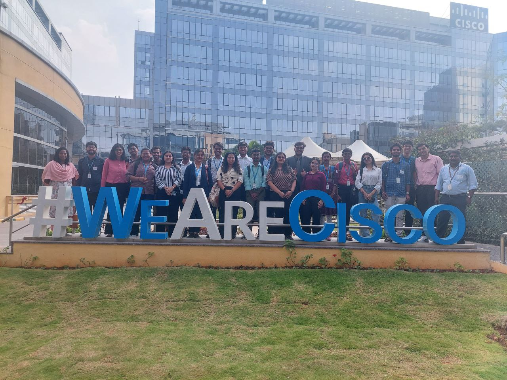

🌐 I was selected to attend Cisco's "Discover Cisco Season 3 Episode 3" in Bangalore on 24th January 2024. It was indeed an honor to explore Cisco under the theme "Crafting Possibilities with Gen AI".
🎤 The event kicked off with a campus tour and a captivating session in the auditorium,hosted by Kavya and Alina. They introduced #DiscoverCisco to be proudly made in India, which has now expanded globally with 10 sessions featuring exceptional themes, exemplary leaders, and a passionate core team. The event opened with an original song composition, followed by an insightful speech from Priyanka Bhagat ,a veteran with 20+ years of experience in HR and leadership.
👨💻 Mr. Mukul Golash ,a distinguished Software Engineer at Cisco , and Smruti Mohanty delved into the world of generative AI. They discussed predictive AI vs generative AI, AI's complement to human intelligence along with latent space and embedding space concepts.They additionally gave insights on the 2 major types of generative ai technologies, namely GAN (generative adversial network) and DDM (denoising diffusion models).Further they spoke about the use cases of generative AI including intelligent hybrid work environments with cinematic office meetings.
💼 Mr. Aman Lamba ,a public speaker and technology professional, shared wisdom on navigating the VUCA world (Volatile, Uncertain, Complex, Ambiguous). He emphasized the Jagged Technology Frontier and the responsibility of being an AI leader.
🎬 The day concluded with lively dance performances by Cisco employees. Grateful to Dr.Manikandan Sir ,Vellore Institute of Technology and Cisco for this incredible opportunity to learn and connect. Looking forward to applying these insights in my journey.
Experience
